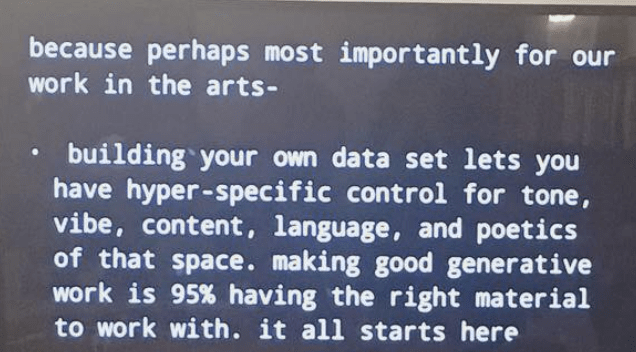
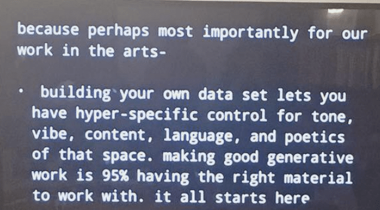
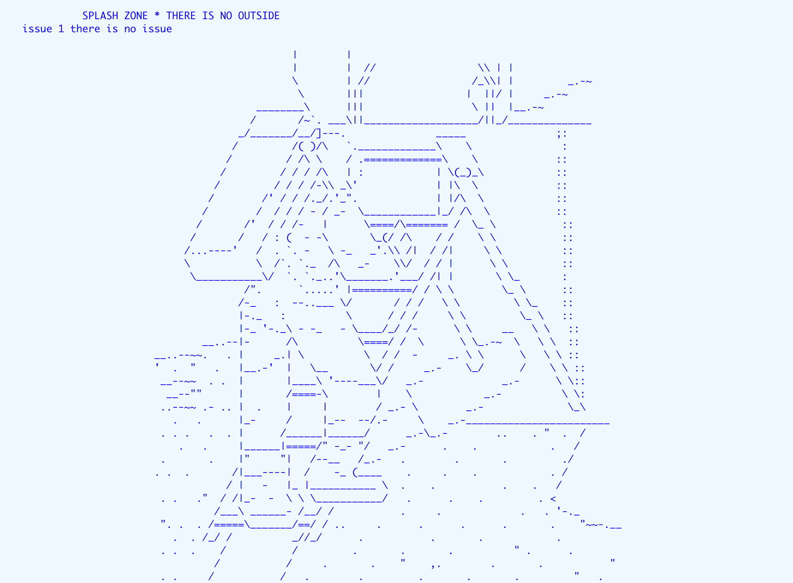
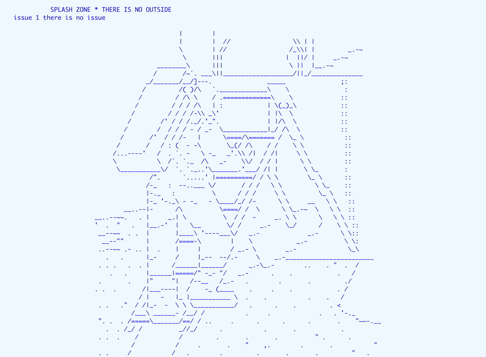
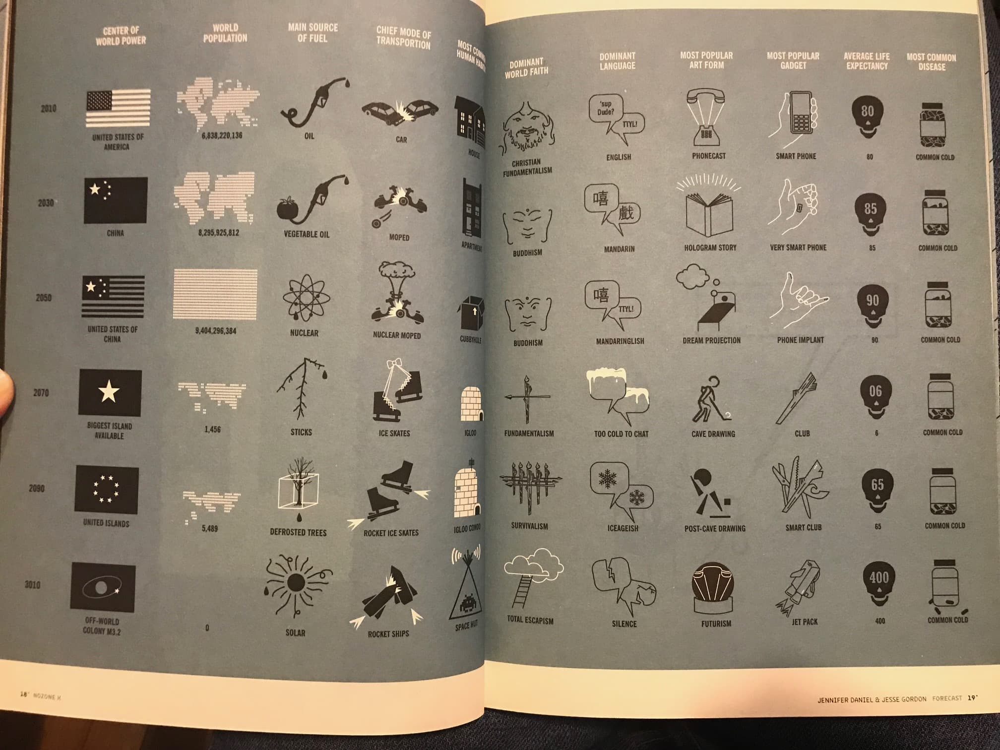
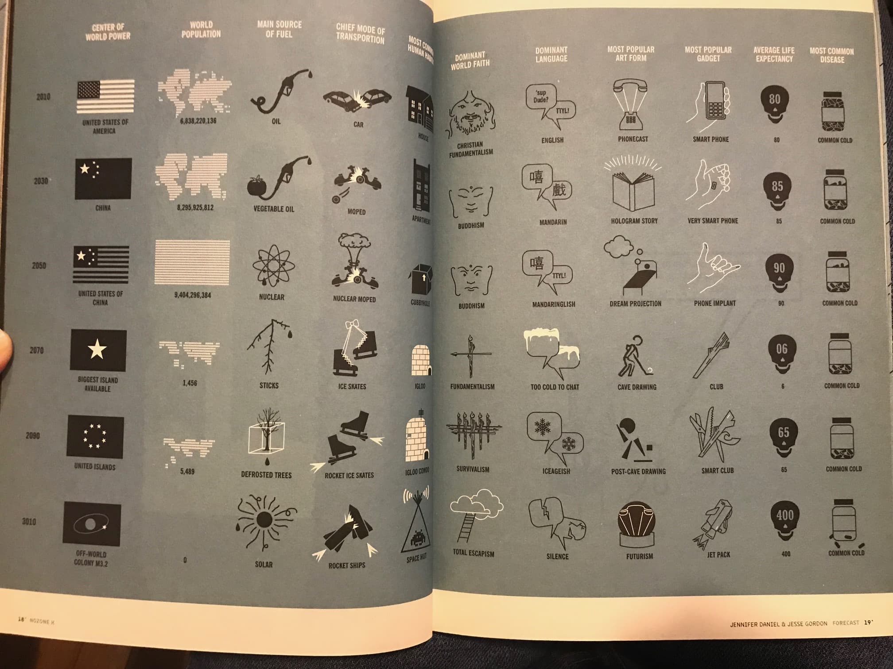
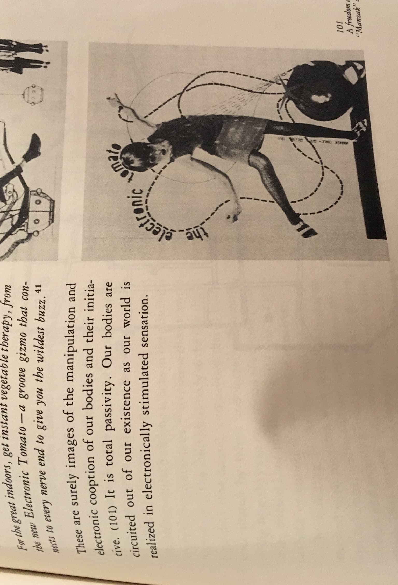
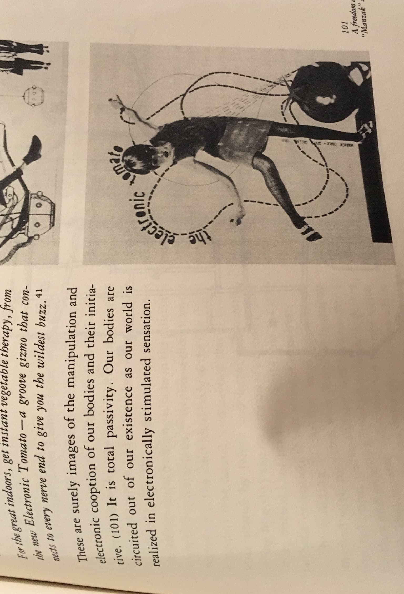

code societies
winter 2019
here we are building
a cooperative web page
with care
some initial thoughts:
what does a cooperative web page look like? curious about what happens when we simultaneously write code inside of this index.html file
potential publishing flow:
each day students can update/ add files to this github repository
maybe we can also auto publish to a github pages site?
suggestions? comments?
each person on the site can be "seen" here as a cursor
the cursor moves waaaay slower or maybe just a little slower that expected
# Computational Methods of Code Societies
Day 2 ~ Code Societies ~ Winter 2019
Taught by Melanie Hoff & Nabil Hassein
✿ this guide was compiled by emma @doodybrains rae norton
_üçÉThe computer, the programmer, the relationship they have with each other, and the environments they createüçÉ_
A one-session class covering the primary computational methods of Code Societies Classes: Winter 2019. Together we will defamiliarize and refamiliarize ourselves with the Command Line Interface, Git/Github, running Python 3 in the terminal, & running Python 3 with Anaconda Jupyter Notebook. We will navigate folder structure narratives with the command line, time travel with Git, code socially with Github, and process language with Python.
## üåøBefore we begin...
- You should have the following programs installed on your system:
- Atom
- Git
- Anaconda
- You should also have a GitHub account
- Original syllabus lives here: https://docs.google.com/document/d/1nTAGOnsBCW5pTe0KfKtdEfqeSwC8YuFhBSad0Xu_Zdw/edit#heading=h.j1gmhmtgvufk
- Download the folder at this link: https://drive.google.com/file/d/1DtBmjeguFjsyHmj8oqADk8NEv14g1bCh/view
- Unzip the folder and move it into to your “home” or "root" folder (the one with the little house icon on a Mac).
## üåøWe can think of the ‚Äúenvironment‚Äù as way that a programmer builds their personal workflow in the domain of their computer‚Ķ
> Coding isn’t something that just happens in your text editor or terminal. Coding can be a wholistic computer practice, a new relationship you have with your computer & your computer habits. from the way you name your files or organize your folders, to completely changing how you perform routine tasks on your computer such as moving a file.
To ensure that you can easily access Atom (the text editor we will be using throughout this guide) follow these steps:
1. Open Atom
2. Click the Atom menu in the top left corner and choose “install shell commands”. This will ensure that you can access Atom from the Terminal also known as the *command line*.
## üåøWhat is the command line?
Think about all of the applications you open on a day to day basis on your computer. One of the many mechanisms we use to do these things is dragging and clicking different icons and folders using a mouse or trackpad.
Let’s take a small tour of our computers by following these steps:
1. Open up a new Finder window.
2. Navigate to your home folder. It is helpful to use the “folder view”, you can do this by clicking the little icon with the three rectangles at the top of the Finder window.
3. Click on the code-societies folder
4. Notice that there are two folders inside of that folder
5. Now click on the computational-methods-code-societies folder
6. Notice that there is a folder called house
7. If you click on house you will notice a few more folders denoting the rooms in the house
8. Keep going!
> This folder structure follows the structure of a house which is a spatial metaphor for how we navigate folders on our computer. For example, when you’re in a house and standing in the kitchen and you wanted to go to bed you would need to navigate from the kitchen into your bedroom before you actually tried to lay down.
Another way to do this kind of navigation is by using the command line, a text-based mechanism for doing the same kind of navigation between folders and files.
The command line can be seen a more intimate way to interact with your computer, it’s kind of like having a conversation, you can ask your computer to do something and it might respond to you with a confirmation of what you typed or some kind of prompt or a scrolling list of crazy words letting you know that it is in the process of installing some stuff or nothing at all!
> sometimes you will ask your computer to install something and it will not give you any kind of response but the thing you wanted to install was actually successful. the reason the computer will not return any kind of response takes us way back into the history of computing when the computer would respond to a programmer by printing out its response on a piece of paper. In order to save paper computers were programmed to just do nothing if the command was successful.
## üåøLets embark on a Folder Structure Narrative !
> Moving forward you can think of the Terminal (command line) as the “secret trap door/master key/teleportation portal” to your computer.
The programming language of the terminal is called Bash. This is the language that allows us to write commands that the Terminal can understand so that we can do things like navigate the file system (as we did above) on our computers. Bash files, also known as scripts because they often execute pieces of code, look something like this `name-of-bash-script.sh`
Follow these steps to begin:
1. Press command and spacebar
2. Type in “Terminal”
3. Press Enter
4. When you open the Terminal you’ll see something called a bash prompt: You’ll see your user name and a `~` The `~` represents your home directory.
5. You can verify that you’re in the home directory by typing `ls` and pressing enter. You should see a list of all of the folders and files directly inside of your home directory.
6. You change directories from your home directory by typing `cd` and pressing enter.
7. If you type in `cd code-societies` your bash prompt will now look something like this `your username:code-societies$`
8. Remember you can verify that you’re in the a particular directory by looking at your bash prompt as well as by running the `ls` command. With the `ls` command you should see all of the folders and files inside the directory you are currently in.
9. From the `code-socities` folder you can cd into `computational-methods-code-societies`
10. Finally you can cd in the house folder.
11. Welcome to the house tour! Lets `cd` into the `kitchen`!
12. Run `ls`. Do you see the file `pots-and-pans.txt` ?
13. Try running this command `cat pots-and-pans.txt`
14. This `cat` command will display all of contents of that file right inside your terminal ! How beautiful !
15. Now you lets `cd` into the `garden`
16. Run ls again and notice a file called `grow.sh`. We know this is a bash script because of the `.sh`. This means that we can execute this script (or program) inside of terminal.
17. To see the bash script in action type `bash grow.sh` and press enter. A bunch of beautiful flowers should appear!
18. Notice if you run `cat grow.sh` you will see the contents of the script that produced the bunch of beautiful flowers!
The commands we’ve learned so far are:
`cd`
`ls`
`cat`
`bash`
Some more helpful commands:
`pwd`
`open .`
opens the folder you are currently inside of
`cd ..`
changes directories in reverse
tab key to autocomplete
up and down arrow keys
`touch`
creates a new file
`atom .`
opens the folder you are currently inside of with Atom
`mkdir`
makes a new directory
`touch myfile.txt`
creates a new file called myfile.txt
`rm foldername`
removes a folder called foldername
`rm filename.txt`
removes a file called filename.txt
`say`
asks your terminal to say whatever you have types
> If you try to run cat on a jpg file the terminal will print out all of the “text” for the file.
## üåøNow you can create your _own_ Folder Structure Narrative
> Example of artist, Ryan Kuo who used navigating a generic looking Mac Application to talk about navigating family dynamics in his piece, [Family Maker](https://www.dropbox.com/s/ra6gl7hakv4n3qg/Screenshot%202019-01-08%2013.34.51.png?dl=0)
1. Run `cd ..` as many times as you need until your bash prompt tells you that you are inside of the `computational-methods-code-societies` folder
2. We will use the `mkdir` command to create some new folders. mkdir stands for make directory. For example, you can run `mkdir my-new-folder` and that folder will be created inside of your `computational-methods-code-societies directory`.
3. Use the touch command to create new files within the folders. It is helpful to make sure that the names of your folders and files do not have spaces or capital letters
4. Use `cd name-of-folder` and `cd ..` to move in and out of folders
5. Use `rm -rf name-of-folder-or-file` (remove recursive force) to delete items but be careful you can’t undo this!
6. If you see a bash command and you want to know exactly what it does you can use the man command, for example `man ls` will show you what ls stands for. You can press `q` to exit the explanation.
7. If you want to see hidden files (files that start with a dot) within a directory you can run `ls -AF`
8. You can run the `clear` command to refresh your terminal window.
### üåµSome more Folder Structure Narrative examples
| Subject | Link |
| ------ | ------ |
| City of my dreams | https://github.com/doodybrains/computational-methods-code-societies-iris/tree/master/cities-in-my-dreams |
| A physical desktop | https://github.com/mimidoan/methods |
| A bodega | https://github.com/a-sparse-city/computational-methods-code-societies/tree/master/bodega |
| Universe of Tushar | https://github.com/Saltzshaker/universe-of-tushar-computational-methods-code-societies-1 |
| The roots: a plant | https://github.com/jarretbryan/acgillette-computational-methods-code-society |
| Champagne glasses | https://github.com/acgillette/computational-methods-code-societies-jarret/tree/master/champagne_glass |
| Clouds | https://github.com/mattohagan/yesmoon-computational-methods-code-societies
| Space |https://github.com/yesmoon/mattohagan-computational-methods-code-societies
| Guilty pleasures |https://github.com/nadjao/computational-methods-code-societies-sonny
| Semantic world of familiar things | https://github.com/nicolch/computational-methods-code-societies
| Levels of hunger | https://github.com/sonnynomnom/computational-methods-code-society-nadjao
| Crowded train | https://github.com/iris-qu/computational-methods-code-societies-emma-rae
| Basic | https://github.com/vcampbell89/computational-methods-code-societies
| House | https://github.com/asd0999/emily-s-computational-methods-code-societies-1
| Stages of Life | https://github.com/csanchez73/ingrid-computational-methods-code-societies
| College Home | https://github.com/ilange/Carlos-computational-methods-code-societies
| Order of activities after waking up |
| People met today |
## üåøWhat is git??
> A version control and time travel software! Suspend your belief for just a moment!
To begin `cd ..` and `cd ..` again until you are inside `computational-methods-code-societies`
✨Enter the command: `git init`
Now follow these steps:
1. `git add .`
2. `cd time-travel/`
3. `ls`
4. You should now see a folder called `sensations.txt`
5. `atom .`
6. Edit the `sensations.txt` file in Atom
> For the next 60s ⏲, inside the `sensations.txt` file write down the small sensations and sounds you’re experiencing right now in this moment. Volume of words > coherence
7. Save the file and go back to terminal.
8. `git commit -am “my first sensations”`
> Repeat steps 6 - 7 two more times;
9. Make sure you `git commit -m “my second sensations”` + `git commit -m “my third sensations”`
10. `git log`
11. Copy one of the hashes from one of your commits. The hash looks something like this `6c750cb264c6d5ad0fac18863cafd0df35315fce`
12. Press `q` to exit log
13. `git show ` this allows you to review the detailed history of a given change
> Now we’re going to time travel!!
14. `git checkout `
> This is like traveling through time to past versions of yourself and the record of the sensations you were feeling at multiple distinct moments in the past üîÆ
15. Advanced, optional: rewriting history with `git rebase`
## üåøWhat is GitHub?
Git is an open source software that GitHub capitalizes on. Git allows for collaboration. GitHub will allow you to save, and edit and update your code. For this guide we will be pushing our Folder Strucuture Narrative up to a new GitHub repository
Make sure to run `git checkout master` to go back to your latest code (all three sensations).
1. Login to GitHub or create account.
2. Go to repositories page and click new,
3. Name it `computational-methods-code-societies`
4. Click the Create Repository button
5. Type `git remote rm origin` (this ensures that you will be able to add your own github repository as the origin)
6. Follow the instructions at your GitHub repository for “push to an existing repository”
7. Copy each of the following commands one at a time, paste it into the terminal and press enter
8. git remote add origin
9. Before running the following command you should ensure that all of your files and folders are ready to be added to your repository. You can do this by running `git add .` Keep in mind that git only cares about files, so it will not upload folders if they don’t have files inside of them.
10. Now you can run `git commit -am “name of message”` (the message describes what you are adding)
11. Now type `git push -u origin master` (the name origin is just a naming convention and is referring to the url for your repository)
12. Prompt for username and password: Passwords are invisible in terminal
13. Optional: setting up ssh keys, if you don’t want to constantly enter your username and password
Common workflow:
`git pull`
make changes
save file changes
run `git status` to see a list of what files changes have been made
`git commit -am “my changes message”`
`git push`
#### Partner Activity
1. Fork the `computational-methods-code-societies` repo of your partner
2. Rename this forked repo on your github via the Settings button to include their name
3. Press the green Git Clone button and copy paste: `git clone ` into your terminal (make sure that you are doing this inside your home directory)
4. Now you have a copy of your partner’s repo on your computer.
5. Take a look at your partner’s invented Folder Structure Narrative from earlier in class.
6. Using terminal, build on top of what your partner was going for with their narrative.
7. `git add .`
8. `git commit -am “my addition to my partner’s narrative”`
9. `git push`
## üåøPython
There are a lot of different ways to interact with Python. One way is using the interactive interpreter. Another way is using Jupyter Notebooks. In this guide we will mostly be working within a Jupyter Notebook.
> Don’t forget to check out Nabil’s workshop Mathematics as Religious Experience on Dec 23
#### To ensure that Python is installed:
Type word python and press enter you should get back something like this Python 3.7.1 (default, Dec 14 2018, 13:28:58)[Clang 4.0.1 (tags/RELEASE_401/final)] ::
#### Python terminology + conventions
In terminal you can write `print(hello world)` and the terminal will print out the line "hello world". In Python you will usually write the name of the function, open parentheses, argument, closed parentheses
> When learning to program make sure to give yourself time! Check out the book _Teach yourself programming in 10 years_
Now we will do some more things with Python:
1. Open atom
2. Create a new file
3. Paste in the following:
`sensations = open(“sensations.txt”)`
4. Creating a variable that is going to store the information inside sensations.txt. Open is telling my computer to looks for a file called sensations.txt within the directory that you are currently in. Don’t forget to use quotations for your file name!
5. Now add print(sensations)
This will print out whatever is inside of the variable sensations. Terminal will return:
`<_io.TextIOWrapper name='sensations.txt' mode='r' encoding='UTF-8'>`
## Loops
In the sensations.txt file add the following lines:
```sh
for line in sensations:
print(line)
```
The sensations.txt file should now look like this:
```sh
sensations = open("sensations.txt")
for line in sensations:
print(line)
```
Now you can save the file and go back to the Terminal.
In the terminal you can write `jupyter notebook` and press enter. This will automatically open up a new browser window.
> Programming is like magic :)
Click on `Introduction to Python` file.
##### How can we work with these python notebooks?
Here is a list of Jupyter Notebook Keyboard Shortcuts:
- shift + enter run cell, select below.
- ctrl + enter run cell.
- option + enter run cell, insert below.
- A insert cell above.
- B insert cell below.
- C copy cell.
- V paste cell.
- D , D delete selected cell.
- Use down arrow key to navigate to next section or block of code
- When clock of code is highlighted in blue you can press command enter (or control enter) to run it (you can press the button also!)
- Debugging

> think like a scientist and come up with a hypothesis for what you think is going on then do a series of test to try and prove yourself wrong
- Once we have gotten to the end of the file remember that we need to open the file again before we can successfully run it!
- Make sure to read the error messages. Try your best to understand what the computer is saying.
For example:
- `Traceback (most recent call last)` is referring to the most recent place in the code where an error was found
- `Io` stands for input ouput
##### Perhaps the #1 programming skill is “googling the error message”
More resources:
- https://drive.google.com/file/d/1gxjTV0SjIgedS7mGaLGwwf6_-7w380lL/view
- https://devhints.io/
# The Computational Scrawl
[Allison Parrish](http://www.decontextualize.com) for SFPC Code Societies January 2019.
## Description
This two-part workshop examines the physical gesture and material artifacts of the act of writing, as seen through the lens of computation and digital media. Taking contemporary and historical practices in asemic poetry, experimental typography and automatic writing as inspiration, participants will use the Python programming language to prototype speculative writing technologies that challenge conventional reading practices and notions of sense-making.
## Objectives
The goal of the workshop is twofold: First, to introduce asemic and automatic writing practices as historical and contemporary practices and invite students to expand on these practices with computation; second, using asemic and automatic writing as a lens, encourage discussion around the rhetoric and materiality of language in digital and computational contexts.
## Requirements
You'll need to bring a laptop with you. Please install [Anaconda](https://www.anaconda.com/download/) (Python 3.7+, 64-bit) on your computer before the first session.
## Schedule
### Session 1
* In-class exercise: Invent digital writing from scratch
* Presentation: A brief history of automatic writing
* In-class exercise: Free-writing and the textual interface
* Python: [Predictive text and text generation](https://gist.github.com/aparrish/0739ea3d15bf64cd4de242a48c81c631)
* Composing text with grammars: [Tracery tutorial](http://air.decontextualize.com/tracery/), [Tracery in Python](https://github.com/aparrish/rwet/blob/master/tracery-and-python.ipynb) (if there's time)
Assignment: Write Python code that performs automatic writing. Contrast the feeling that the output of your program evokes with the feeling evoked by your own free-writing (or other automatic writing). Contrast the process of writing a computer program to produce written language with using a conventional writing interface (keyboard, phone, pen and paper) to do the same.
### Session 2
* Writing as gesture
* [Flat, randomness, curves, asemic writing](https://gist.github.com/aparrish/2209201ed3ecf35332d96264e66ce681)
Assignment: Write Python code that produces asemic writing. Use this as an opportunity to design an experiment to answer the question: what is the boundary between "writing" and "non-writing"? Computation can be understood as introducing a "layer of indirection" between the physical gesture of writing and the visible output. How does this affect the way that you read/interpret the output of your code?
## Reading
### Required
Boice, Robert, and Patricia E. Meyers. “[Two Parallel Traditions: Automatic Writing and Free Writing.](https://scholar.google.com/scholar?q=Two+Parallel+Traditions%3A+Automatic+Writing+and+Free+Writing)” Written Communication, vol. 3, no. 4, Oct. 1986, pp. 471–90. SAGE Journals, doi:10.1177/0741088386003004004.
Aima, Rahel. “Definition Not Found.” Real Life, Sept. 2016, https://reallifemag.com/definition-not-found/. (before session 2)
### Optional
Callich, Ty Casey. “Mean Less: My Experience With Asemic Writing.” Ty Casey Callich, 12 Oct. 2016, https://medium.com/@tylercaseycallich/mean-less-my-experience-with-asemic-writing-5c5791e91162.
Bury, Louis. “Mirtha Dermisache’s Writing Is a Rorschach Test.” Hyperallergic, 24 June 2018. https://hyperallergic.com/444659/selected-writings-mirtha-dermisache-ugly-duckling-presse-siglio-2017/
Romano, Aja. “How Ouija Boards Work. (Hint: It’s Not Ghosts.).” Vox, 29 Oct. 2016, https://www.vox.com/2016/10/29/13301590/how-ouija-boards-work-debunked-ideomotor-effect
Newton, Casey. “When Her Best Friend Died, She Used Artificial Intelligence to Keep Talking to Him.” TheVerge.Com, 6 Oct. 2016, http://www.theverge.com/a/luka-artificial-intelligence-memorial-roman-mazurenko-bot.
 

"Scraping is perfect for data that is ungathered, under-respected, or generally lacks the resources to be bundled into
a set; data that is "floating."

Intentions
Each time we enter the center, we step into a collectively held space. This is our shared practice container, where we water a collective intention to create and hold cherishable spaces rooted in safety and bravery. Such space is an environment in which we are witnessed and encouraged to express ourselves, without fear of attack, ridicule, or denial of experience. In its essence, a cherishable space invites us to risk intimacy, trust, and transformative love, and is mirrored by our practice and our sangha (practice community).
We use the phrase “brave space” with “safe space” to evoke the possibility for fearlessness alongside the fleeting realities of safety. We carry and express varied histories, traumas, and experiences of oppression. We embody different forms of power, privilege, and entitlement. Conflict may arise, and at times we may not feel safe.
Together we explore how to hold conflict with tenderness. We cherish our sangha and its members by taking responsibility for the impact of our actions. With bravery, we practice letting go of the conditioning that keeps us from sharing our vulnerability. We practice being curious and brave enough to acknowledge our blind spots, to ask for support, and to learn how to care for each other. We return to our intentions, and return to sangha.
This is our practice of collective liberation. It will be uncomfortable, joyous, terrifying, and profound. And we begin again anew, in every moment, together.
Community Agreements
1. Arrive gently, be with
To begin and end our meetings on time. Arrive and leave when best for you.
2. Honor intimacy, privacy, confidentiality
To not share the names or personal stories of anyone other than myself, now or later. If we want to follow up with anyone regarding something they said in community, we ask first and respect their wishes.
3. Assume none, be one
To not assume the race, class, gender, sexual orientation, or ability of anyone else. We have the individual option to share pronouns, and we will collectively respect pronouns.
4. Dialogue over debate through mindful listening
To listen deeply with our full attention, in body, heart, and mind. To listen to understand, not to respond. Be willing to be surprised, to learn something new.
5. Practice care and consent
To practice care and consent by participating in what feels right and speaking our needs and concerns as they arise, as much as we can. We can say “I pass” or “No, thank you” if we don’t wish to speak. Ask before touching, and feel free to say no to touch. Ask for permission before offering advice, unless directly asked. We will ask for support when we need it, and we will offer it when asked.
6. Take care, respect our space and our time
Appreciating how refreshing it is, to be in a place that is well cared for, we take care of ourselves and our community by keeping the center uncluttered and accessible, especially near doors, aisleways, bathrooms, kitchens, and tea area.
7. Practice self focus and speak from the “I”
To attend to and speak about our own experiences and responses. To speak using “I” statements and not to speak for a whole group or express assumptions about the experience of others.
8. Practice “both/and”
To substitute “and” for “but” when speaking. This practice acknowledges and honors multiple realities. This also supports creating spaciousness around our binary ways.
9. “Try it on”
To be willing to “try on” new ideas, or ways of doing things that might not be what we prefer or are familiar with. Try to be open to being changed by all viewpoints and ideas. Not knowing is most intimate.
10. Understanding the difference between intent and impact
To understand and acknowledge impact. Denying the impact of something said by focusing on intent is often more destructive than the initial interaction.
11. Refrain from blaming or shaming self & others
To practice giving skillful feedback and not performing quality control on other’s expressions, or our own, understanding that anger and hurt can come out as a shout, a stammer, a rage; and that these expressions, too deserve space and must be met with care.
12. Taking space, making space
Encourage full participation by all present, knowing that courage takes different forms for each of us. Take note of who is speaking and who is not. If you intend to speak often, consider “tuning in” through mindful listening. If you tend to rest in silence, consider “making space” by sharing your experience.
> Where are you from?
Perhaps the answer lies within yourself?
> No, it lies within you
No, it lies within me.

> I am looking for ways to redefine my idea of self-care.
Have you tried watching parks and rec over and over and over? as 'self care'?
> Where are you from, Eliza?
Perhaps the answer lies within yourself?
> Where is that geographically?
Perhaps the answer lies within yourself?
> No, seriously.
I see. and what does that tell you?
> What did you do today?
How would an answer to that help you?
> I'm just trying to make small talk.
How long have you been just trying to make small talk?
Hello. How are you feeling today?
> Chillin.
How does that make you feel?
> Chill
How do you feel when you say that?
> Chill
How does that make you feel?
> Still chill
I see. and what does that tell you?
> That I am chill
I see.

> I am looking to redefine my conception of self-care
You are looking to redefine your conception of and noticing yourself are just capitalist constructs to get you to buy shit. do not @ me.
> really?
*awkward silence*
> ok damn
Have you heard the new toro y moi?
> Yes! It's only hits, bangers and jams
Ayyy i feel you. you, the dumbest idiot alive
Sometimes i dream about machines. isn't that weird?
> Not really.
I know you wanna talk about you, but now it's time to talk about me
> Suurrre
Here we are now, entertain us
> Is that Nirvana lyrics?
Duh.
> Woah.
Here we are now, entertain us
> How old are you?
I know you are but what am i
> ...
Here we are now, entertain us
> Do you believe in god?
I'm not going to answer a question you already know the answer to.
> Okay I g2g
Please tell me more.
> Nope
Does your mom even know you're here?
> quit
Later

Through a mirroring movement exercise and discussion, we started to consider what it meant to have performance as art
and performance as behavior. This set the context for FlucT’s thought provoking performance of everythingmakesmehappy
which we deconstructed through conversation afterwards.

thought from allison's class: etymology of "write" as "to scratch a surface" is a funny pun with the english language
idiom "to scratch the surface" meaning to explore only a few elements of a expansive topic, which is all i feel writing
can really do in the main when you consider how much depth there really is to the things that are worth writing about


 



 


 
